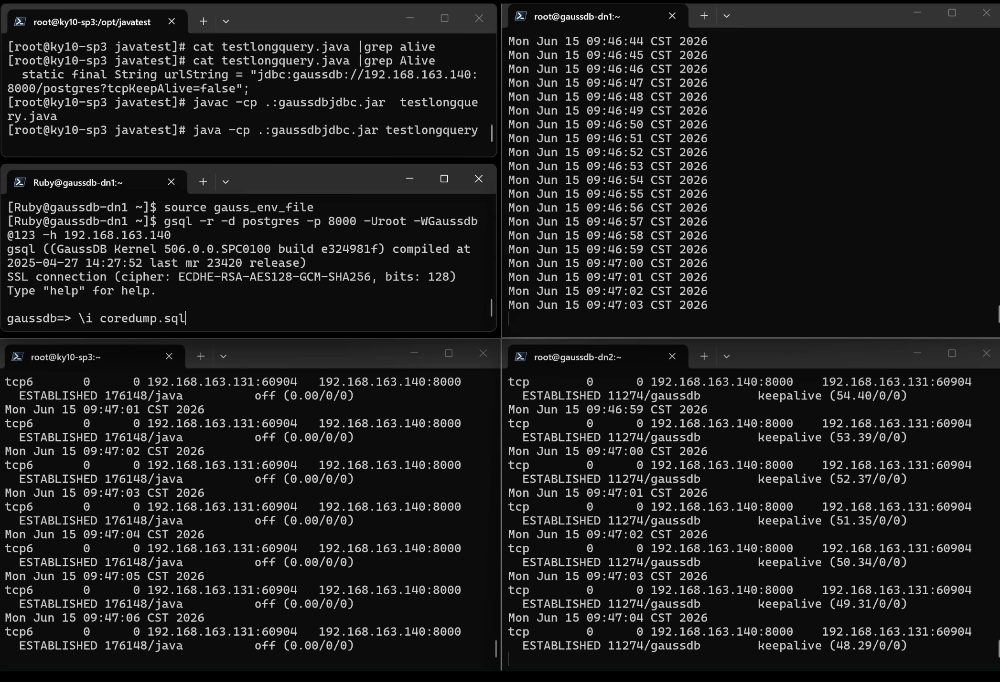
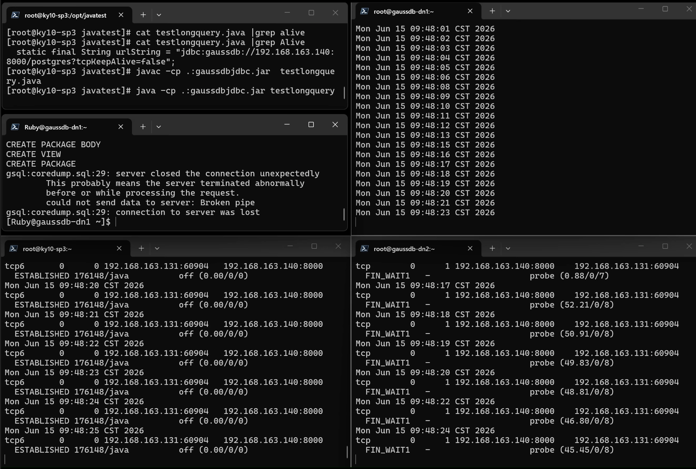
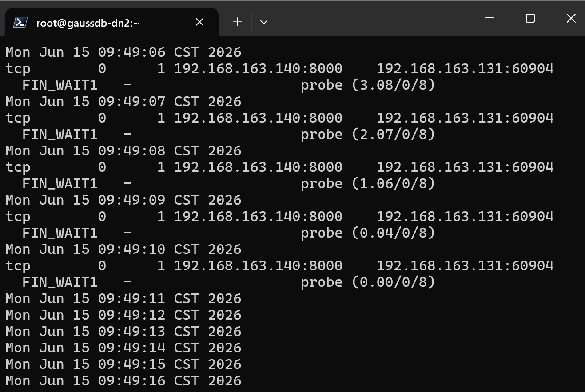
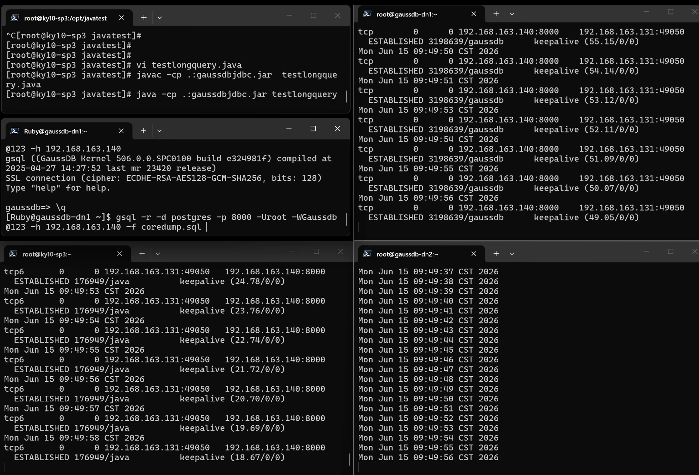
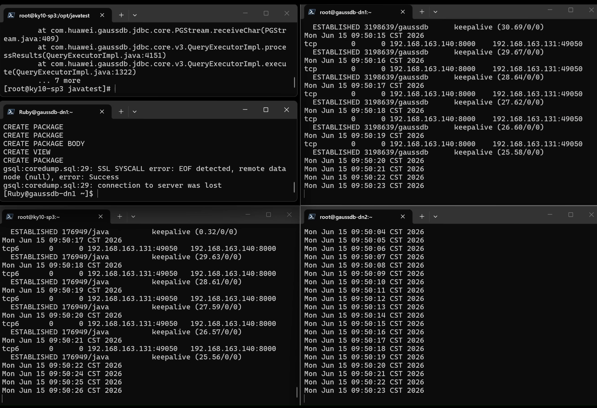

【GaussDB】分析GaussDB在coredump后，部分应用连接假死的问题
现象
GaussDB集中式主备环境，有多个java应用使用vip连接数据库，数据库主节点由于某个bug触发了coredump，vip漂移到备库，备库升主，有部分应用报错后重连到了新主库，但另一部分java应用hang死在那，没有任何日志输出。
分析
先收集数据库端故障发生的时序信息
- 从原主节点gs_log里找到PANIC ，发生时间为 t
- 原备库切换角色，成为新主，发生时间为t+1
- 从新主节点cm_agent的日志找到up vip和修改listen_addresses的记录，发生时间为t+2
- 从原主节点cm_agent的日志里找到 down vip 和修改listen_addresses 的记录，发生时间为 t+3
- 观察原主节点的coredump文件，最后修改时间为t+4
- 从原主节点gs_log观察到 ,t+5时刻原主已经成为新的备库
| 时刻 | 原主节点 | 原备节点 |
|---|---|---|
| t | PANIC,开始coredump | |
| t+1 | 成为新主 | |
| t+2 | 挂载vip,arping,修改listen_addresses（反复重试） | |
| t+3 | 卸载vip,修改listen_addresses（反复重试） | |
| t+4 | coredump文件生成完成，进程退出 | |
| t+5 | 以备库身份重启，build 完成 |
由于机器的内存很大，coredump耗时非常长，所以原主进程退出也花了很长时间，虽然这不影响新主通过vip提供服务，但问题就发生在这个时序上。
GaussDB进程退出时，操作系统会把该进程所有持有的句柄进行释放，就包括了所有的文件句柄和网络句柄，关闭网络句柄时，会向对端发送分手包，对端收到就能马上断开连接。但是这次问题时，在GaussDB进程退出时，vip早就被卸载了，所以分手包发不到客户端，服务端就退出了，但客户端连接还在。只要客户端不发起新的请求，客户端就无法感知服务端连接已断开。
所以我们设想一个场景，客户端发起一个需要在服务端执行耗时很长的SQL（比如count大表，或者执行耗时很长的存储过程），此时服务端vip卸载，客户端还一直在等服务端的返回，而且期间客户端不会发送新包给服务端，如果客户端socketTimeout设置为0，客户端就一直卡在那了，应用的感觉就是hang住。
这里就得提到一个从原版PG开始一直遗留到现在的一个问题，即postgresql的jdbc驱动中，tcpKeepAlive 这个参数是默认关闭的，GaussDB也延续了这个配置。
只要开启了 tcpKeepAlive，客户端在等服务端返回sql结果期间，也会不断发送keepalive包探测连接是否正常。
这个问题在gsql和libpq上不存在，因为libpq上的参数 keepalives 默认是打开的。
测试验证
环境准备
这里我使用了三台机器:
一台运行java程序，另外两台分别为GaussDB的主备节点
- 192.168.163.131 java客户端
- 192.168.163.118 GaussDB dn1
- 192.168.163.119 GaussDB dn2
- 192.168.163.140 GaussDB VIP
三台机器的操作系统tcp_keepalive设置均为
net.ipv4.tcp_keepalive_intvl = 30
net.ipv4.tcp_keepalive_probes = 9
net.ipv4.tcp_keepalive_time = 30
用于测试的java程序,很简单，连接上去执行一个耗时很长的SQL
import java.sql.*;
public class testlongquery {
static final String urlString = "jdbc:gaussdb://192.168.163.140:8000/postgres?tcpKeepAlive=false";
static final String userName = "root";
static final String password = "Gaussdb@123";
/**
* @param args
* @throws Exception
*/
public static void main(String[] args) throws Exception {
Connection conn = DriverManager.getConnection(urlString, userName, password);
String query_sql1 = "select count(1) cnt from pg_class a,pg_class b,pg_class c" ;
PreparedStatement ps =conn.prepareStatement(query_sql1);
ResultSet rs =ps.executeQuery();
while (rs.next()){
System.out.println(rs.getString("cnt"));
}
ps.close();
conn.close();
}
}
构造会coredump的任意SQL,这里使用了以前提过的GaussDB视图依赖问题【GaussDB】浅浅说下GaussDB中视图依赖关系的一个处理逻辑
set ddl_invalid_mode='invalid';
set enable_force_create_obj=on;
drop view if exists v_test_dep;
drop package if exists pkg_test_dep;
drop package if exists pkg_subtype;
create or replace package pkg_subtype is
subtype varchar_8 is varchar(8);
end;
/
create or replace package pkg_test_dep is
function func(i int) return pkg_subtype.varchar_8;
end;
/
create or replace package body pkg_test_dep is
function func(i int) return pkg_subtype.varchar_8 is
begin
return i::text;
end;
end;
/
create or replace view v_test_dep as
select 1 from dual where pkg_test_dep.func('1')='1';
create or replace package pkg_subtype is
subtype varchar_8 is int;
end;
/
select * from v_test_dep;
测试步骤
- 在131java应用机器上监控netstat vip:8000端口
while true; do date; netstat -tunlpoa |grep 192.168.163.140:8000 ; sleep 1; done
- 在两台GaussDB机器上监控java应用服务器的连接
while true; do date; netstat -tunlpoa |grep 192.168.163.131 ; sleep 1; done
- 在java应用服务器机器上，编译并启动java程序
javac -cp .:gaussdbjdbc.jar testlongquery.java
java -cp .:gaussdbjdbc.jar testlongquery

- 使用gsql连接GaussDB主节点，执行coredump脚本
gsql -r -d postgres -p 8000 -f coredump.sql

GaussDB发生failover，vip飘到新主库，应用服务器上java程序卡死，符合问题现象。
可以观察到java应用服务器上的这个连接在sql发出去后就一直没有变化了，一直显示为 off(0.00/0/0)，必须关闭java应用才断开连接；而对应在原主库上的这个连接显示 FIN_WAIT1、probe，超时重试8次（tcp_orphan_retries）断开了

jdbc开启keepalive再测
再测试jdbc开keepalive的情况，把java程序里连接串上的tcpKeepAlive参数改成true，重新编译执行

可以看到长查询执行过程中，客户端会一直keepalive。
然后执行coredump.sql来触发数据库coredump

在原主库coredump后，java很快就报错退出了
[root@ky10-sp3 javatest]# java -cp .:gaussdbjdbc.jar testlongquery
Exception in thread "main" com.huawei.gaussdb.jdbc.util.PSQLException: [192.168.163.131:49050/192.168.163.140:8000] socket is not closed; Urgent packet sent to backend successfully; An I/O error occurred while sending to the backend.detail:EOF Exception;
at com.huawei.gaussdb.jdbc.core.v3.QueryExecutorImpl.handleIoException(QueryExecutorImpl.java:5044)
at com.huawei.gaussdb.jdbc.core.v3.QueryExecutorImpl.execute(QueryExecutorImpl.java:1354)
at com.huawei.gaussdb.jdbc.core.v3.TracedQueryExecutorImpl.execute(TracedQueryExecutorImpl.java:92)
at com.huawei.gaussdb.jdbc.jdbc.PgStatement.runQueryExecutor(PgStatement.java:737)
at com.huawei.gaussdb.jdbc.jdbc.PgStatement.executeInternal(PgStatement.java:690)
at com.huawei.gaussdb.jdbc.jdbc.PgStatement.execute(PgStatement.java:497)
at com.huawei.gaussdb.jdbc.jdbc.PgPreparedStatement.executeWithFlags(PgPreparedStatement.java:209)
at com.huawei.gaussdb.jdbc.jdbc.PgPreparedStatement.executeQuery(PgPreparedStatement.java:146)
at testlongquery.main(testlongquery.java:20)
Caused by: java.io.EOFException: EOF Exception
at com.huawei.gaussdb.jdbc.core.PGStream.receiveChar(PGStream.java:409)
at com.huawei.gaussdb.jdbc.core.v3.QueryExecutorImpl.processResults(QueryExecutorImpl.java:4151)
at com.huawei.gaussdb.jdbc.core.v3.QueryExecutorImpl.execute(QueryExecutorImpl.java:1322)
... 7 more
注意事项
需要注意的是，JDBC参数socketTimeout会影响连接正常时的长查询，对于执行存储过程的业务是不安全的，因此一般不建议配置，除非是那种数据库执行失败也无所谓的应用系统。
另外，由于java是在11版本起才支持配置 tcpKeepAlive 的超时时间和重试次数 ( Add support for per Socket configuration of TCP keepalive )，所以jdbc驱动仅仅只能支持开启或者关闭 tcpKeepAlive ,无法配置超时时间和重试次数，只能靠操作系统来处理，但 tcpKeepAlive 这个功能也不是所有操作系统都支持的，比如在windows上这个配置就没有效果。所以吧，现状如此，也不能说为什么jdbc驱动不加这keepalive的超时和重试配置了。
但为什么POSTGRESQL的JDBC驱动要默认关闭 tcpKeepAlive 呢？有一个说法是，keepalive虽然开销少，但早期CPU和网络配置都很低，如果遇上连接池很大的应用，闲置的时候会产生大量的keepalive包，使本来就紧缺的硬件资源产生了大量不必要的开销。然后后续版本为了兼容性，就一直延续下来了。另外，按照PG学院派的思路，应用端假死检测，应该由应用程序自身的健壮性来保证。
另外，GaussDB执行failover的这个过程会有很多自动化步骤，而且很多都是并行或异步的，在数据库负载特征不一样时，不同步骤耗时不一样，会导致处理时序上的差异。因此本文测试仅代表当前环境，测试结果不代表真实生产环境。比如某些环境的应用端开了 tcpKeepAlive 后,也有可能会卡一段时间，但至少不会一直卡那无法自动恢复了。
想要避免这个问题，其实还有一种方式，就是不使用vip，而是配置使用多ip连接，这样就不会出现vip卸载后，旧主节点无法发送断开信号到客户端的问题了：
jdbc:gaussdb://192.168.163.118:8000,192.168.163.119:8000/postgres?targetServerType=master
总结
虽然开启tcpKeepAlive解决了本文中发生的应用假死问题，但这并不代表我就推荐你去开启tcpKeepAlive，因为这只是头痛医头脚痛医脚的手段罢了。
在应用系统设计中，不能仅考虑应用软件自身的代码逻辑，数据库、操作系统、中间件以及CPU、内存、磁盘、网络等硬件，甚至包括操作应用软件的人，同样都属于整个应用系统的一部分。虽然说现代应用架构从设计上都是尽量解耦的，但涉及到跨组件或者跨设备故障时，依然可能发生不可控的影响。因此这就要求应用架构师具备各方面的综合能力，能设计出好的架构，以规避或减轻任何故障带来的不良影响。